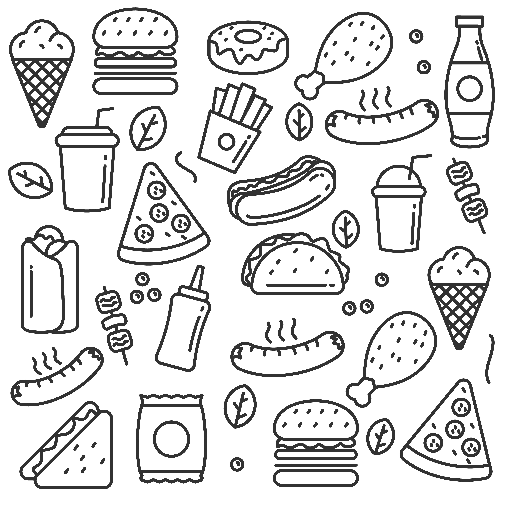
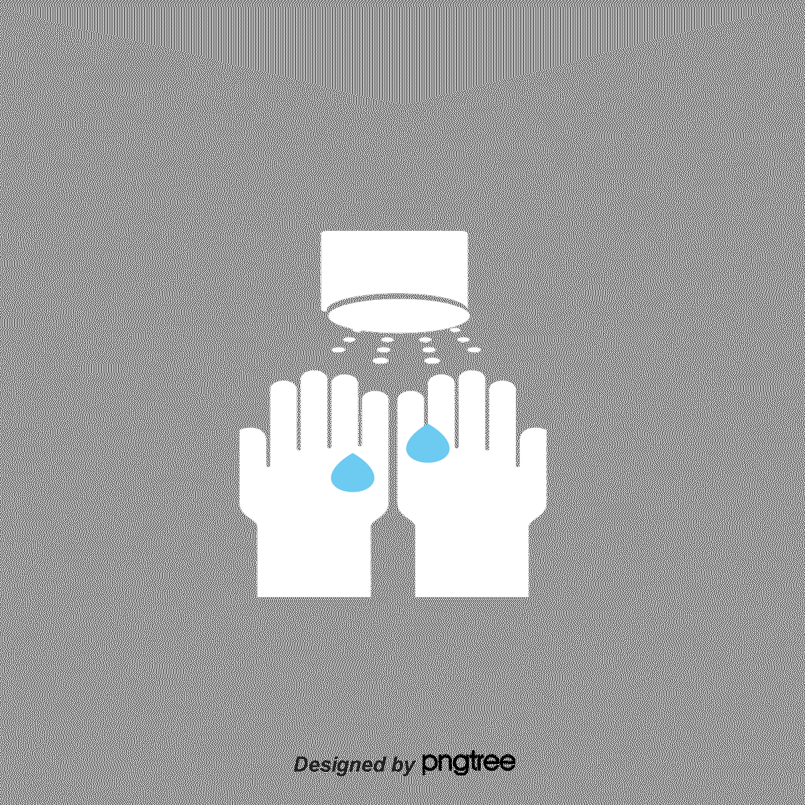
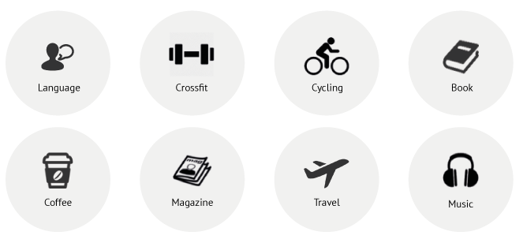
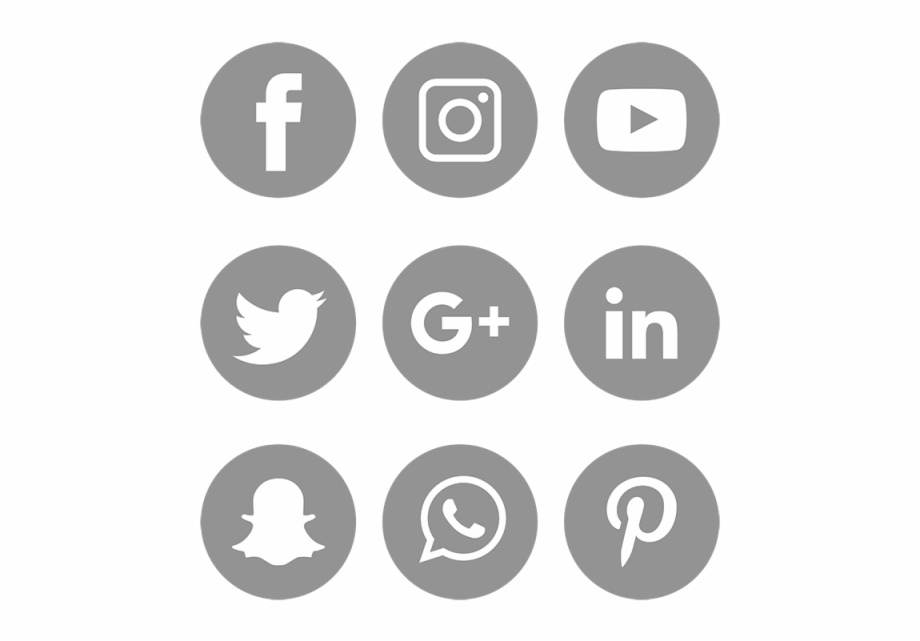
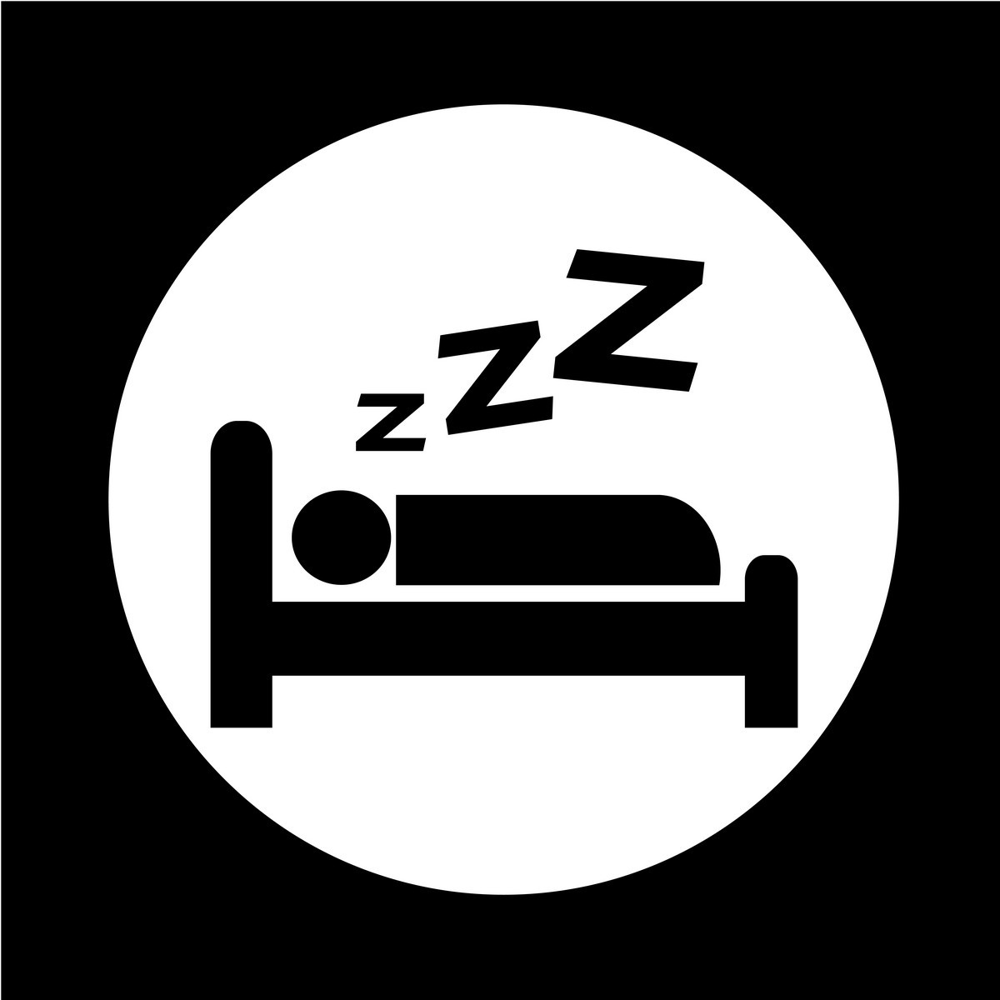
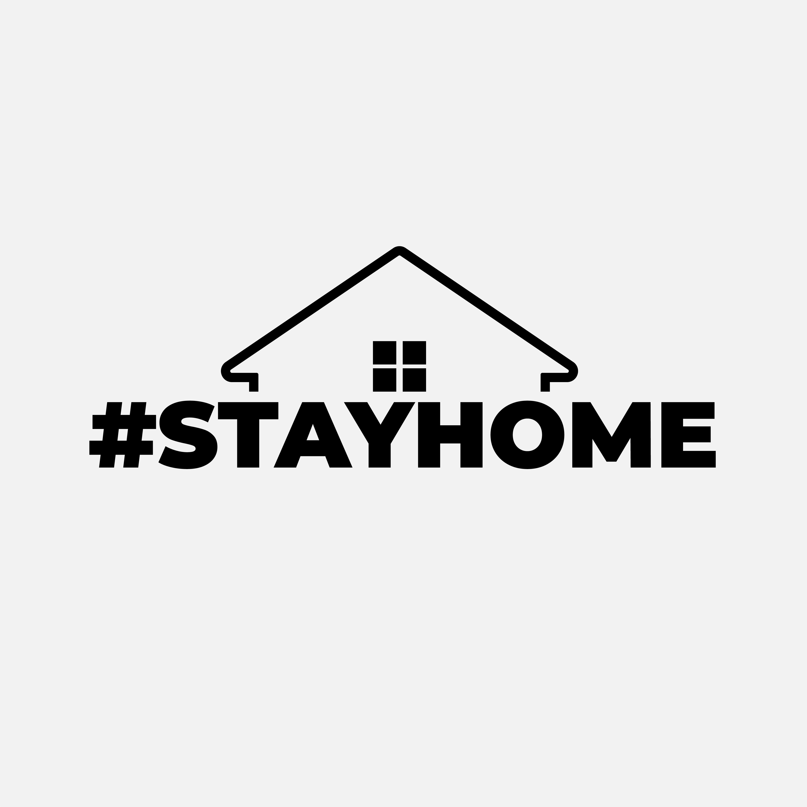

A family can be indeed a good companion and it has been proved in this covid19 time. quality
time with family and love once increases in early stage of covid19

Eat healthy stay healthy , during covid19 became more and more implicable as it helpn youth
and old people to regain the immunity power ....
A healthy body help during covid19 to fight with carona virus and continue the beings to be
healthy as far as possible and out of reach from the virus as far as possible..

Precautions is better than cure. as santization became a part of life like eating ,sleeping
and other routine..

Exploring new things, like everything became online and there is new way for the people who
can access easily get everythingin just one click..and make us more digital users..
Wearing mask to avoid precautions is same as santization but one of the covienent as
everyone is not working offline and do santizationat regular basis..so wearing mask and one
arm distance came into more power.

Social media user increases day by day as for the enternainment and for the education
resources..meet app and classroom app became a part of university and school students...

Good sleep good health became one as lazy people became more into sleeping and active people
fed of been in home so sleep became another vital.

Stay home stay safe in the early stage of carona is like working but after that one has to
go out and collect resources to no die of hunger rather than carona.